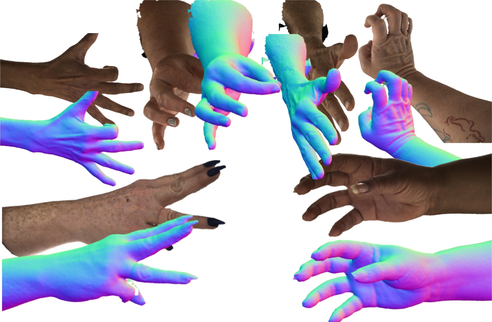
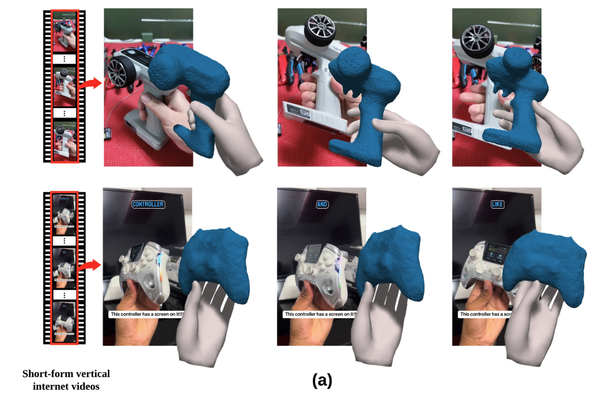
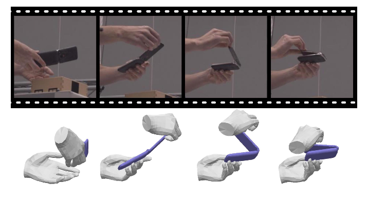
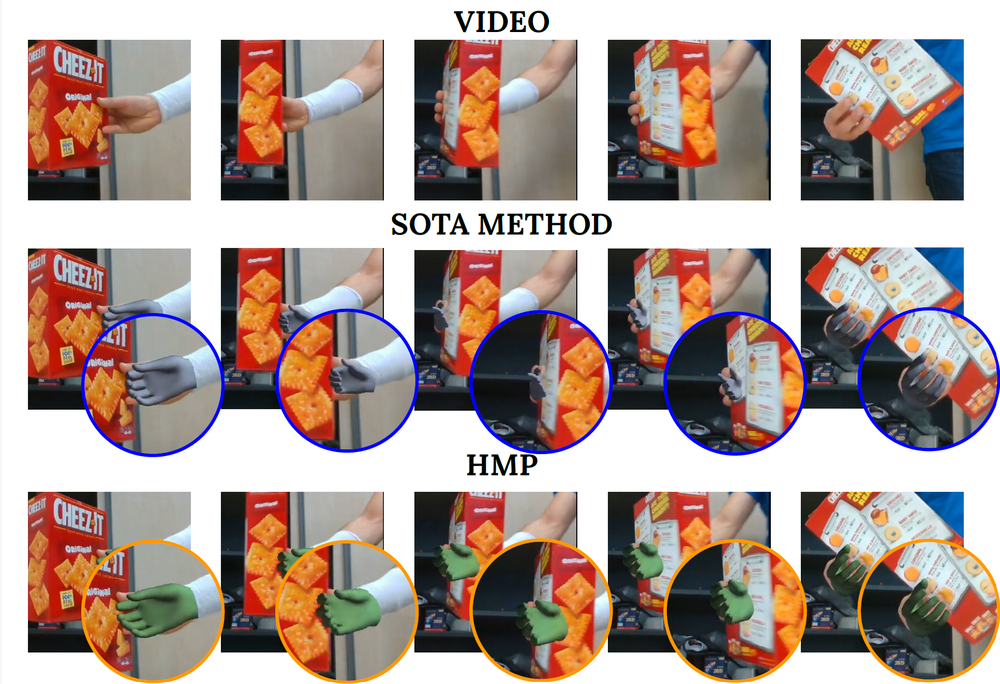
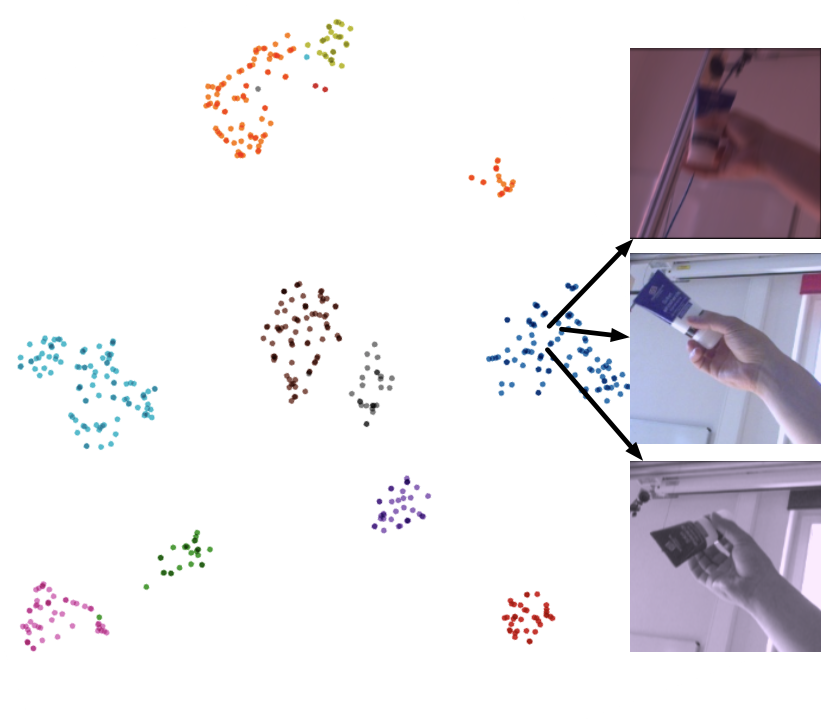
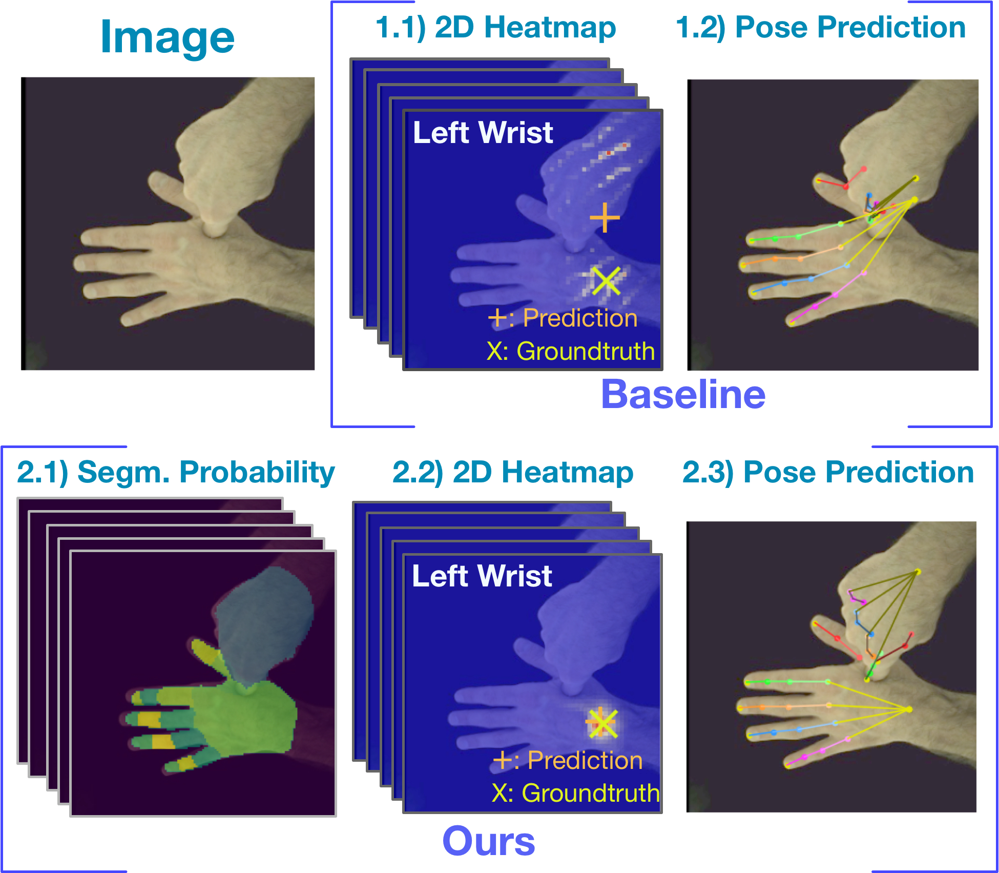

Biography
The hand is where intention meets the physical world. Understanding how humans grasp, manipulate, and interact with objects is not just a perception problem — it is a blueprint for how intelligent systems should act. I reconstruct and synthesize these interactions to close the gap between vision and embodied intelligence.
I received my PhD from ETH Zürich, advised by Michael J. Black, Otmar Hilliges, and Marc Pollefeys. Before that, I completed my BSc (2018) and MSc (2020) in Computer Science at the University of British Columbia — working with Ian M. Mitchell on robotics, and with Leonid Sigal and Jim Little on vision and language. I have also spent wonderful time at Max Planck Institute for Intelligent Systems and Meta Reality Labs.
My research centers on hands in action: 3D hand pose estimation, human/hand-object reconstruction, and generative synthesis of interaction. I am drawn to problems where geometric structure, physical plausibility, and learning meet — and I seek methods that are both principled and practically useful. I co-organize the HANDS workshop series at ICCV/ECCV (2023–2025), a leading venue for hand perception and interaction in computer vision.
News
- 2026/02Joined Epic Games (acquired)
- 2025/08Started as a scientist at Meshcapade
- 2020/08Started my Ph.D. at ETH Zürich and Perceiving Systems
Datasets
Research







Code & Star History
Education
- 2020 – 2025Ph.D. in Computer Science, ETH Zürich
- 2018 – 2020M.Sc. in Computer Science, University of British Columbia
- 2016 – 2018B.Sc. in Computer Science, University of British Columbia
- 2014 – 2016Associate of Science, Langara College
Awards
- 2019Alexander Graham Bell: Canada Graduate Scholarship-Master’s, NSERC Canada
- 2017Undergraduate Student Research Awards, NSERC Canada
- 2016Governor General’s Collegiate Bronze Medal